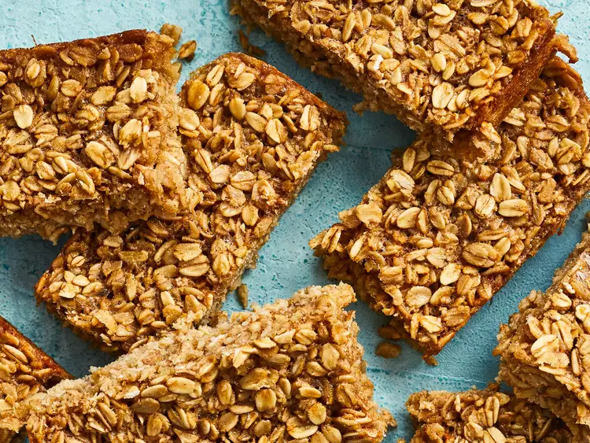
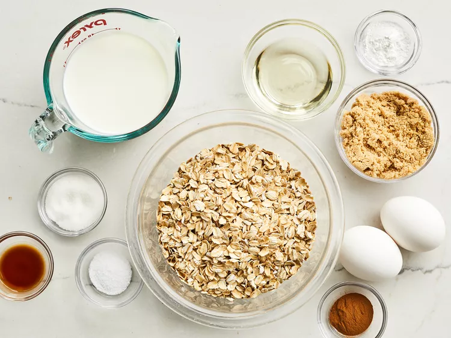
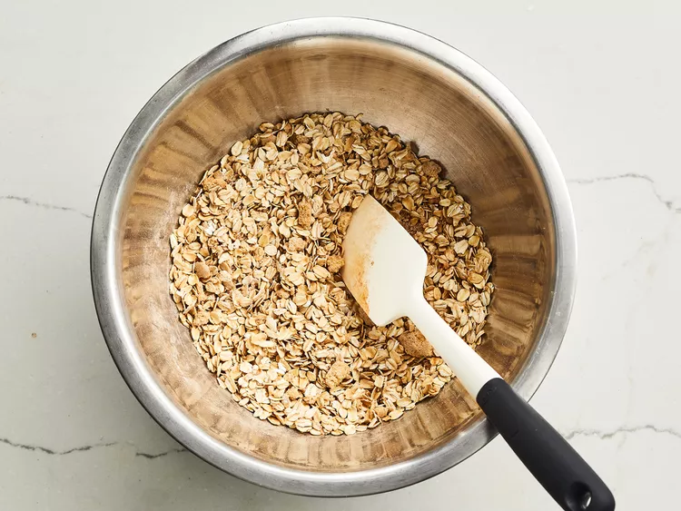
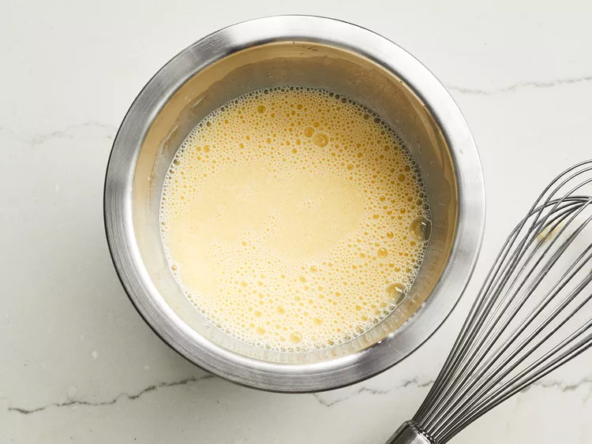
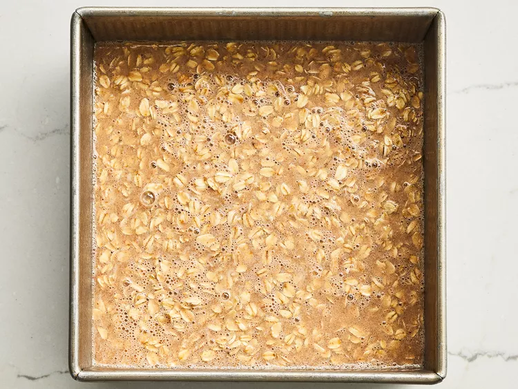

Baked Oatmeal Breakfast Bars

Description
This recipe provides a base for chewy oatmeal bars, but you can add flavor and texture by incorporating dried fruits, chocolate chips, or chopped nuts to suit your own tastes. Packed with oats, these are perfect for a grab-and-go breakfast, snack, or lunch box addition.
Ingredients
- 2 cups old-fashioned rolled oats
- ⅓ cup packed brown sugar
- 1 tablespoon white sugar
- 1 ½ teaspoons baking powder
- ½ teaspoon salt
- ½ teaspoon ground cinnamon
- 1 cup milk
- 2 large eggs
- 2 tablespoons canola oil
- 1 teaspoon vanilla extract
Directions
- Gather the ingredients.

- Preheat the oven to 350 degrees F (175 degrees C). Grease an 8-inch square pan.
- Mix oats, brown sugar, white sugar, baking powder, salt, and cinnamon together in a bowl.

- Whisk milk, eggs, canola oil, and vanilla together in a separate bowl.

- Stir egg mixture into the oat mixture until well combined. Let sit until flavors blend, about 20 minutes.
- Spread oat mixture into the prepared pan.

- Bake in the preheated oven until the edges are golden brown, about 30 minutes.
- Remove from the oven and let cool completely before cutting into 16 bars.